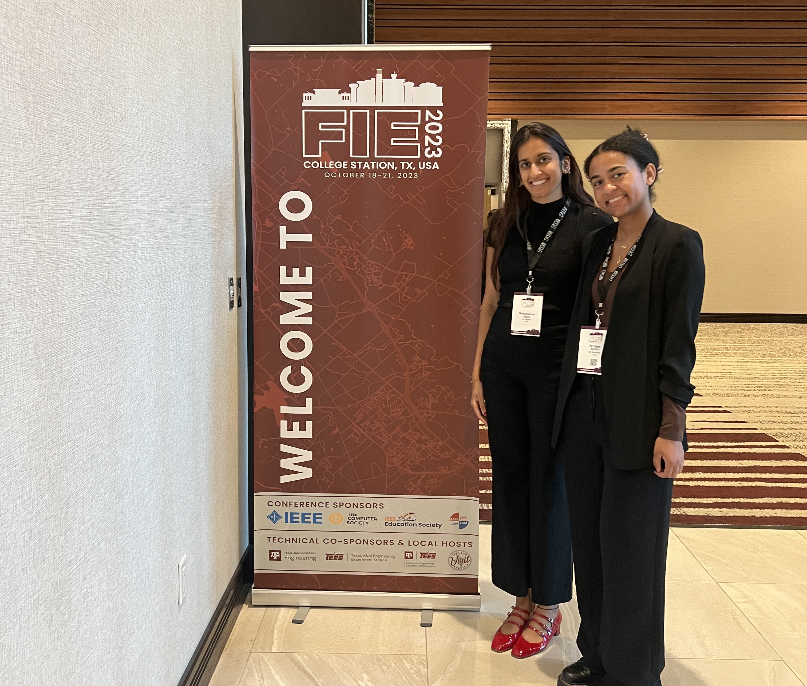
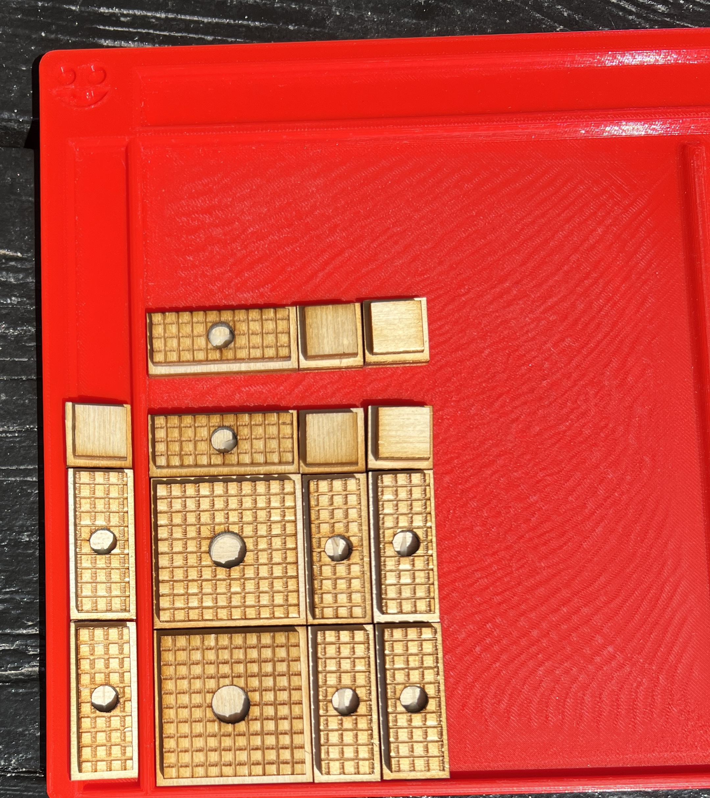

EE 194: Community in Computing
Fall 2023-
In deploying Inclusive Study Groups, we discovered that a lack of communication
was one the largest barrier student groups faced. To alleviate this,
I created and taught a 1 unit P/NP course that complemented EECS 16A and successfully facilitated
group interactions.
(I am in the process of analyzing the data, but email me for some preliminary results!)
Methods: Design Based Research, Constructivist Grounded Theory, Mixed-Methods
Data Collection and Analysis: Survey via GoogleForms, Otter. AI, Otter. AI to CSV converter,
Pandas/NumPy/Stats
Inclusive Study Groups
Fall 2022-

Agyare, B.*, Matsumoto, A.*, Patel, M.*, & Ranade, G. (2023, October). Student Feedback on Opt-in, Inclusive, Course-Integrated Study Groups. In 2023 IEEE Frontiers in Education Conference (FIE) (pp. 1-10). IEEE.
*All authors contributed equally
DOI: 10.1109/FIE58773.2023.10343384s
Underrepresented students in the fields of Electrical Engineering and Computer Science (EECS) can face greater difficulty in
finding student study groups than their more represented peers. Student study groups have many academic and socio-emotional benefits
and thus, we created a multi-partioning algorithm to create student study groups. Our solution is optional, systemic in that it
shifts the burden of finding study groups from the students onto the instructors, and avoids solo-status (no member of an underrepresented
identity group will be the only member of their group). Sinec Fall 2020, we have deployed the system in 13 undergraduate classes at UC Berkeley and
matched over 4,200 students into groups.
Methods: Design Based Research, Grounded Theory (Corbin and Strauss), Thematic Analysis, Mixed-Methods
Data Collection and Analysis: Survey via GoogleForms, Pandas/NumPy/Stats/MatPlotLib
Embodied Learning of Algebra for Braille Readers
Summer 2023
Van Leendert, A., Patel, M., Lambert, S., Abrahamson, D., Gorlewicz, J., & Shvarts, A. (In Review).Embodied Learning of Algebra for Braille Readers The 15th International Congress on Mathematical Education